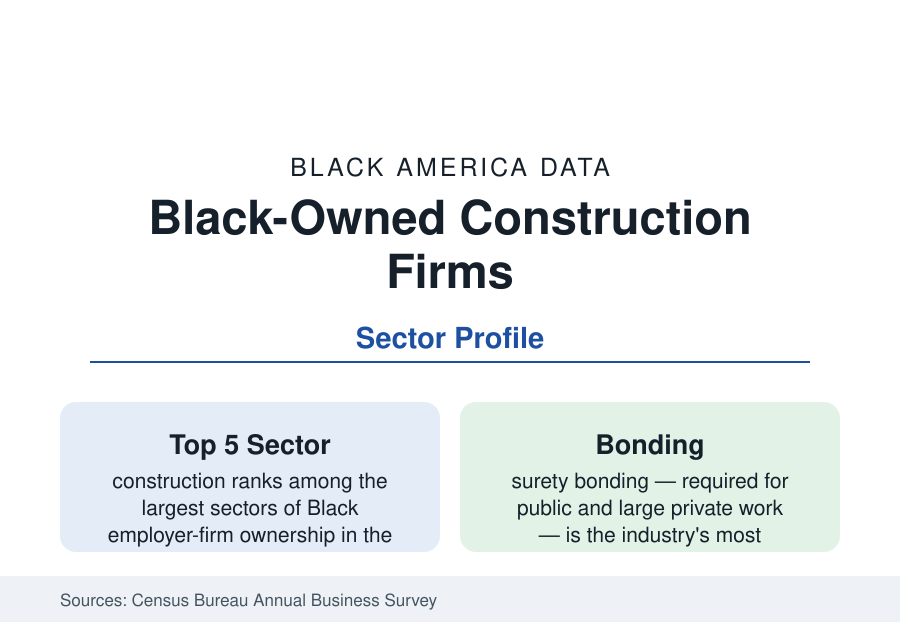

Black Business
Black-Owned Construction Companies: Building in a Bonding-Gated Industry
Construction is one of the largest sectors of Black employer-firm ownership — and the one whose bonding and capital gates are the most explicitly measured. The ABS data.

Construction is one of the largest sectors of Black business ownership in America — ranking in the top five of Black employer firms in the Annual Business Survey, with a far larger nonemployer universe of contractors and tradespeople — and it is the sector where the machinery of exclusion and inclusion is most concretely documented, because the industry's gates have names: bonding capacity, working capital, prompt payment, and the public procurement programs built to counterweight them. This article reports the construction data.
Heavy and civil engineering — highways, water systems, transit — is the segment where public demand dominates and the largest Black firms in the industry operate, concentrated in the transportation corridors of the Southeast and Midwest.
The Sector's Shape
Black construction firms distribute across the industry's tiers in the pattern the capital data predict. The great majority are small specialty-trade contractors — electrical, concrete, drywall, roofing, trucking and hauling, site work — operating as subcontractors; a thinner layer of general contractors primes mid-sized commercial and public work; and a small top tier of firms — the construction managers and general contractors of regional and national scale, firms like the Detroit, Chicago, Atlanta, and Houston builders whose projects anchor their metros' skylines — primes work in the hundreds of millions. The employer-firm count runs in the range of fifteen to twenty thousand in the survey data, receipts concentrated in the specialty trades, with average firm size below the industry's overall pattern — the structure of a subcontractor economy.
Bonding: The Gate with a Number
Construction is the one industry where market access requires a third party's financial vouching in advance: surety bonds, guaranteeing completion and payment, are mandatory on public work and most large private work, and a firm's bonding capacity — commonly a multiple of its working capital and net worth — caps the size of job it may bid. The mechanism converts the wealth data of the census section directly into market access: the Black median firm's balance sheet supports a fraction of the bonding line of the median firm overall, so Black contractors are structurally confined to smaller jobs whose margins cannot rebuild the balance sheet at speed — the industry's version, with the arithmetic printed on it, of the capital constriction the entrepreneurship profile describes. The SBA's Surety Bond Guarantee program exists precisely at this gate, backing bonds for firms the private surety market declines, and its utilization data are disproportionately Black-firm data.
Public Work and the Procurement Programs
Because so much construction demand is public, the sector is where procurement policy touches Black business most directly. Federal, state, and local disadvantaged-business programs set participation frameworks for transportation and public-works contracting (the federal DBE program in highway and transit construction is the largest), and the disparity studies that jurisdictions commission — statistical comparisons of firm availability against contract utilization — form a data literature of their own, generally finding Black firms' utilization below their measured availability on prime contracts and nearer it in subcontracting. The programs' measured effect in the data is real and bounded: they move subcontracting shares substantially and prime-contract shares modestly, because the bonding and capital gates operate upstream of the bid itself.
Labor, Cycles, and the Housing Link
The sector's fortunes ride the construction cycle with the highest amplitude in the business data: the housing collapse of the late 2000s destroyed Black construction firms at rates exceeding the industry's already severe losses (the firms were youngest, thinnest-capitalized, and most residential-exposed — the post-mortems are consistent), and the subsequent decade's recovery in Black firm counts was correspondingly slow. The current infrastructure-and-industrial construction expansion is the sector's largest demand event in a generation, and its early utilization data are the series to watch: the battery plants, grid work, and water systems of the spending laws are being built substantially in the Black Belt and the industrial Midwest, in the metros whose contractor bases this article describes.
Reading the Construction Data
Construction is the business section's most legible sector: the firms are counted, the gate (bonding) is priced, the programs are measured, and the cycle is timed. Read together, the data describe an industry where Black enterprise is deeply established in the trades, structurally capped at the prime tier by a balance-sheet mechanism, and facing its largest public-demand decade since the interstate era.
More in Black Business
Black-Owned Businesses: Counts, Receipts, and the Representation Gap
About 161,000 Black-owned employer firms and three million solo ventures: how the Census Bureau counts Black business ownership, where firms concentrate, and the gap between population share and business share.
Black Median Net Worth: The Wealth Gap in Federal Reserve Data
The Federal Reserve puts Black median family net worth at $44,900, against $285,000 for White families — about 16 cents on the dollar. The widest gap in economic data.
Black Buying Power: The $1.8 Trillion Consumer Economy
Black buying power is estimated at about $1.8 trillion — larger than the economy of most nations. What the figure measures, who produces it, and what it buys.
Source: U.S. Census Bureau, Annual Business Survey and Nonemployer Statistics by Demographics; U.S. Small Business Administration surety and lending data.